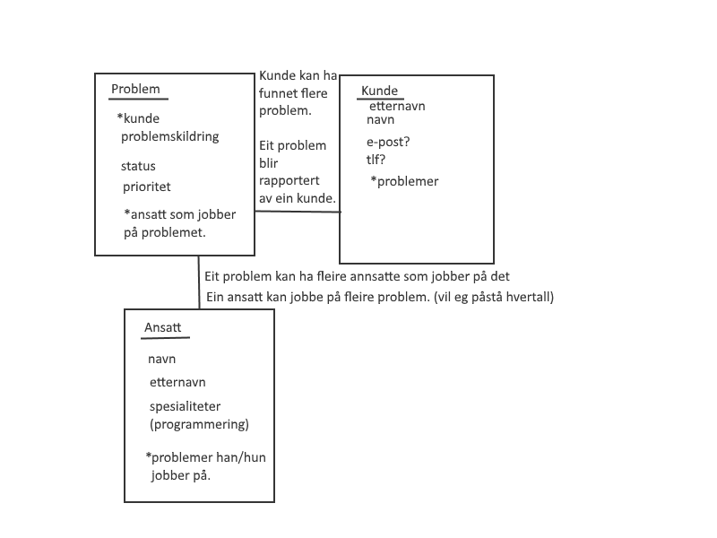

Dette prosjektet omhandler bruken av animasjonar, firebase-databasen og datamodellar, standard HTML
og CSS design samt
bruk av JavaScript til eit visst punkt. Prosjektet skal presentere planlegging som WireFrames,
innhaldsliste og
GAS-analyse. Prosjektet skal omhandla kapittel 3, 5 eller 6. Dette prosjektet omhandler kapittel 3 i
boka og på desse
sidena vil du finne info om dette kapittellet.
På denne sida vil du finna informasjon om prosjektet, navigasjon til dei ulike sidena og alle
planleggingsdokumenter og
wireframes som er brukt. Du vil og finna nede til høgre, ein "Support" knapp, som åpner ein chat.
Denne chatten lagrer
alle meldinger på firebase, og alle som åpner nettsida vil kunne sjå desse meldingane. Denne chatten
er for å skape ein
moglegheit for samarbeid eller støtte for dette kapittellet.
(Legg merke til at det er ein bitteliten Keyframes animasjon oppe i tittelen på sida)
GAS-analyse
Goal:
Denne sida har som mål å undervise om det grunnlegende binære systemet som alle digitale
plattformer og aparater bruker i dag. Den har som mål å undervise dei som ikkje kan noko
som helst fra før, altså dei me ser på som "grunn-elevar".
Audience:
Denne sidas publikum blir folk som ønsker å vita korleis ei datamaskin funker, og sidan
innholdet baserer seg på det som blir skrevet i læreboka fra CappelenDamm, kan me annta
at ein stor del av publikum er IT1-elevar. Det blir derfor vektlagt simplisitet og
grunndig, detaljert forklaring av tema. Det er viktig at det er lett å finne fram til rett
innformasjon og navigere seg vidare til neste tema.
Contents:
Innholdet på denne sida består av grunnleggende informasjon om det binære systemet.
Det er lagt inn diverse bilder, videoer, lydfiler, linkar og animasjonar
for å gjera sida lettare å bruka.
Kravspesifikasjonar
På denne sida er det brukt mange standard HTML-taggar som video, audio, section, article,
header, main, footer. Det er brukt CSS for stilering av sida, og CSS handterer også
at sida tilpasser seg ettersom sida blir sett på på eit mindre aparat som ein mobiltelefon.
Det er også brukt JavaScript for å håndtere navigasjons-menyar, samt chatten nede på sida.
Det er brukt Firebase for lagring av chatten. Det er og tatt hensyn til dei syn. Det er
opplesing av tekst på sida i audio-tagger for dem som ikkje ser so godt (på denne sida
har eg berre gjort det med nokre tekstar, ettersom det er tidkrevande å gjera det på alt,
og denne sida er kun for eksempel på korleis ein kan lage ei nettside.), det er og tatt
hensyn til kontrastar. Det er unngått bruk av store områder med heilt kvit farge, ettersom
det kan være skadeleg for auget og sida er også designet i ein mørkare farge.
Datamodell
IT-support skal ha ein datamodell for korleis dei skal lagre problemskildringar,
kunder, status på problemet og ansatte som jobber på det. Då foreslår eg at me
lagar 3 "boksar" for lagring.
Ein for sjølve problemet. Her lagrar me info som
kunden som rapporterte dette, som er ein framadnøkkel, ansatte som jobber på problemet
som er framadnøkkel/nøkklar, prioriteten på problemet og status.
Neste boks blir for kunder i bedrifta. Ein kan lagre ganske mykje info om kundar,
som gjer det gunstig at dei får sin eigen boks. Ein kan lagre ting som navn,
bustad, kontaktinfo, kva problemer dei har rapportert, kva slags tjeneste dei er
kunde for, osv.
Siste boksen blir for dei ansatte. For som med kundar kan man lagre mykje om ein
ansatt, som programmeringsspråk dei spesialiserer seg i, problemer dei jobber
med å utbedre, navn, bustad, kontaktinfo, arbeidstider, osv.

Bilde av datamodell-løysing for IT-support.